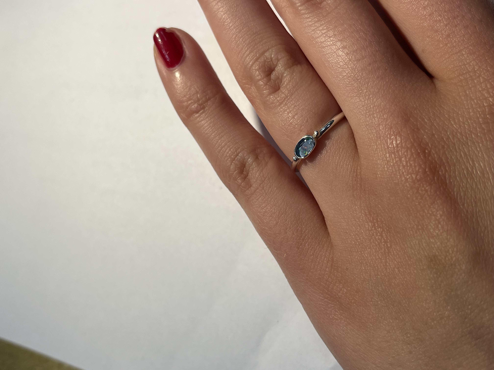

Zilveren ring met opaal.
Deze ring is vervaardigd in zilver en centraal gezet met een opaal in gladomzetting. Aan weerszijden van de steen zijn twee zilveren bolletjes aangebracht. Deze vormen een subtiel decoratief element dat het ontwerp in balans brengt.
